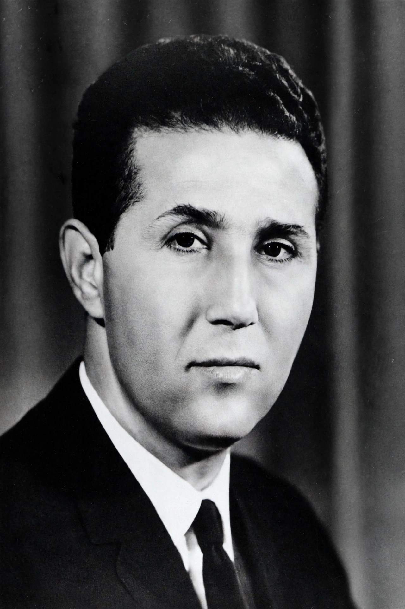

Ahmed Ben Bella (Arabic: أحمد بن بلّة; 25 December 1916 – 11 April 2012) was an Algerian politician, soldier, and socialist revolutionary who served as the head of government of Algeria from 1962 to 1963 and then as the first President of Algeria from 1963 to 1965. He was one of the principal leaders of the Algerian War of Independence against France.

| Ahmed Ben Bella | |
|---|---|
| Born | 25 December 1916, Maghnia, French Algeria |
| Died | 11 April 2012 (aged 95), Algiers, Algeria |
| Office | 1st President of Algeria (1963–1965) |
| Party | FLN |
Ben Bella was born in Maghnia, in western Algeria, to a family of Moroccan origin. He served in the French Army in the Second World War and was decorated for bravery at Monte Cassino. After the Sétif massacres of 1945 he turned to nationalist politics, joining Messali Hadj's movement and then the clandestine Organisation spéciale, for which he robbed the Oran post office in 1950 to fund the cause. Arrested and imprisoned, he escaped from Blida prison in 1952 and fled to Cairo.
In 1954 he was one of the nine founders of the National Liberation Front (FLN), which launched the Algerian War on 1 November 1954. In 1956 French forces diverted the plane carrying Ben Bella and other FLN leaders from Morocco to Tunisia and imprisoned them for the rest of the war — an episode that contributed to the fall of a French government and formed the backdrop of the conflict depicted in Gillo Pontecorvo's film The Battle of Algiers. Generals such as Marcel Bigeard led the French counter-insurgency.
Released under the Évian Accords, Ben Bella became prime minister of independent Algeria in September 1962 and president in September 1963. He pursued socialist policies: nationalisation, agrarian reform, and workers' self-management (autogestion) of farms and factories abandoned by departing French settlers. On 19 June 1965 he was overthrown in a bloodless coup by his defence minister Houari Boumédiène and spent some 15 years in prison and under house arrest. Freed in 1980, he went into exile in Switzerland, returning to Algeria in 1990. He died in Algiers in 2012 and was given a state funeral.
Article recreated from memory for the muse-webcrawl project.